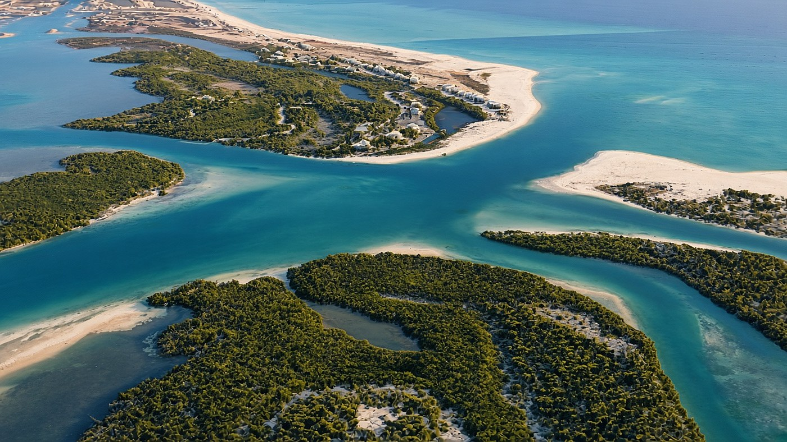

Draft preview for review. Not published. Expand Existing Page for /explore/englewood/manasota-key/. Goes live 2026-11-28. Images shown from local copies. Rollout batch
Explore · Manasota Key, Englewood
Manasota Key is a narrow strip of sand between the Gulf and Lemon Bay, and owning there is as much about storms, elevation, and seasonal use as it is about the view.
The key runs about 11 miles from Stump Pass north into Sarasota County. Its name comes from the Manasota Lumber Company, whose sawmill ran nearby from 1918 to 1923, and Manasota itself blends Manatee and Sarasota. The Charlotte County end is mostly the community of Englewood Beach, just across the bay from Englewood. Here is what to know about Manasota Key homes for sale.
The short version
Two counties. Englewood Beach is in Charlotte County. Manasota Beach is in Sarasota County.
High values. The Census median owner-reported home value for the Manasota Key CDP is $690,300.
Seasonal. About 40 percent of housing units are held for seasonal use.
Storms matter most. Flood zone, elevation, and the home's 2024 storm history come before anything else.
11 mi
length of the key
$690,300
median owner-reported home value, Manasota Key CDP
70.2
median age
40%
of housing units held for seasonal use
Source: U.S. Census Bureau, ACS 2020-2024, Manasota Key CDP; Wikipedia, Manasota Key.

Stump Pass at the south end of Manasota Key.
Geography
Gulf on one side, Lemon Bay on the other.
Manasota Key is an 11-mile-long peninsula that the Gulf Intracoastal Waterway turned into a barrier island. The Gulf of Mexico is on its west side and Lemon Bay, an estuary, is on its east. Stump Pass at the south end connects Lemon Bay to the Gulf and separates the key from Don Pedro Island.
Beach Road crosses Lemon Bay from Englewood to Englewood Beach on the Charlotte County end. The Sarasota County part of the key holds the community of Manasota Beach and continues north toward Caspersen Beach and the Venice city limits. The Manasota Key census-designated place, which covers the Charlotte County end, is about 3.1 square miles, and roughly two thirds of that is water.
Source: Wikipedia, Manasota Key, Florida.
Homes
Beach homes, bayside homes, and condos.
Manasota Key homes are older, valuable, and often seasonal. In the Manasota Key CDP, the Census Bureau's 2020-2024 survey puts the median owner-reported home value at $690,300 and the median year built at 1985. Only about 14 percent of homes were built in 2000 or later, and about 40 percent of housing units are held for seasonal or occasional use.
Gulf side
Homes on the Gulf, where elevation, construction date, and coastal rules matter most.
Check
FEMA flood zone and elevation
Bay side
Homes facing the bay, often with docks. Ask about water depth at the dock.
Condos
Many owners are seasonal, so association health and reserves matter.
In the 2020 census, 63.2 percent of the CDP's 2,062 housing units were vacant, a number that includes homes used only part of the year. That means a quieter summer, and it means buyers often deal with out-of-state sellers and property managers.
Source: U.S. Census Bureau, ACS 2020-2024, Manasota Key CDP; 2020 census, via Wikipedia.
Storms
The 2024 season changed the island.
In 2024, heavy rain from Hurricane Helene was followed less than two weeks later by storm surge from Hurricane Milton, which caused extensive damage in the Englewood area, including homes that flooded in Helene and were destroyed in Milton. Ask every seller what happened to the home in 2024 and what was repaired, rebuilt, or permitted.
Pull the parcel on the FEMA Flood Map Service Center and ask for an elevation certificate.
Storm repairs should appear as county permits. Missing permits are a red flag.
Get them during your inspection period. Coastal homes can surprise you.
Source: Wikipedia, Englewood, Hurricanes Helene and Milton.
Daily life
Life here runs on the tide.
Stump Pass Beach State Park covers the south end of Manasota Key, with about a mile of beach where seashells and shark teeth wash up. It opens 8 a.m. to sunset every day and charges $3 per vehicle. Visitors can paddle around the two islands just east of the park and may see manatees, gopher tortoises, and shorebirds.
For restaurants, groceries, and services, owners cross back to Englewood. Schools are on the mainland: Lemon Bay High School and L.A. Ainger Middle School in Charlotte County earned A grades for 2025-26. If you want the beach without living on the island, look at Rotonda West or Placida and Cape Haze.
Source: Florida State Parks, Stump Pass Beach State Park; Florida Department of Education, 2025-26 School Grades.
FAQs
Where is Manasota Key?
Manasota Key is an 11-mile-long strip of land between the Gulf of Mexico and Lemon Bay, turned into a barrier island by the Gulf Intracoastal Waterway. It runs from Stump Pass in Charlotte County north into Sarasota County.
What county is Manasota Key in?
Both. The Charlotte County part is mostly the community of Englewood Beach, and the Sarasota County part includes Manasota Beach. The county sets your appraiser, tax bill, and building rules, so check it on each parcel.
How much are homes on Manasota Key?
For the Manasota Key census-designated place, on the Charlotte County end, the Census Bureau's 2020-2024 survey puts the median owner-reported home value at $690,300. Gulf-front homes run higher than bayside condos, so compare like with like.
Do people live on Manasota Key year round?
Many do not. In the 2020 census, 63.2 percent of the 2,062 housing units in the Manasota Key CDP were vacant, which includes seasonal homes, and the 2020-2024 survey counts about 40 percent of units as held for seasonal use.
How do you get to Manasota Key?
From Englewood, Beach Road crosses Lemon Bay to Englewood Beach on the Charlotte County end of the key. The Sarasota County part has its own crossing farther north, so map the drive to any specific address.
What is Stump Pass Beach State Park?
It covers the south end of Manasota Key, with about a mile of beach where shells and shark teeth wash up. It is open 8 a.m. to sunset and charges $3 per vehicle.
Weighing the move?
Start with our straight answer to Is Punta Gorda a good place to live? It covers the climate, storms and insurance, schools, healthcare, airports, beaches, and every neighborhood guide in one place.
Looking at Manasota Key?
We will pull the flood zone, storm history, and permits on every home you like, and get insurance quotes started early. Call or text The Helgemo Team at (941) 770-2275.
The office is at 320 Cross Street, Punta Gorda, Florida 33950. You can also meet Brian Helgemo or read more about the team.
Sources: U.S. Census Bureau, ACS 2020-2024, Manasota Key CDP; Wikipedia, Manasota Key (2020 census); Florida State Parks, Stump Pass Beach State Park; Florida Department of Education, 2025-26 School Grades; Wikipedia, Englewood (2024 hurricanes). Checked November 20, 2026.